Illusion & Summoned Bosses¶
Some bosses never spawn on a timer. They only show up after players do something first: kill enough monsters, hand in items, or use special NPCs and items. This page lists every one of them on Miracle and what you need to do.
A server restart resets the counters
Kill counts and hand-in counts are not saved. After a restart or a script reload they all start again from 0.
Map-wide goals. Every player's kills and hand-ins count toward the same total, so it pays to farm together.
Illusion dungeons¶
You can reach every Illusion dungeon from the Warper under Dungeons → Illusion Dungeon.
| Dungeon | Map | Boss | How to summon it |
|---|---|---|---|
| Illusion of Abyss | tur_d04_i |
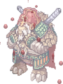 Ominous Turtle General #3804 |
2,500 kills of each of 5 monsters |
| Illusion of Frozen | ice_d03_i |
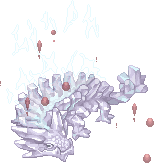 Awakened Ktullanux #3796 |
Activate all 4 Orbs of Seal within 30 seconds |
| Illusion of Labyrinth | prt_mz03_i |
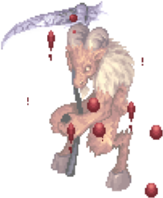 Chaos Baphomet #20520 |
Kill each of the 4 Chaotic heroes once |
| Illusion of Luanda | com_d02_i |
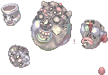 Ancient Tao Gunka #20273 /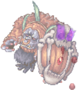 Ancient Wootan Defender #20277 |
1,000 kills |
| Illusion of Moonlight | pay_d03_i |
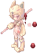 Angry Moonlight Flower #3758 |
More than 1,000 kills, then a 10% chance per kill |
| Illusion of Moonlight | pay_d03_i |
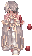 Wizard of the Truth #3764 |
10 kills |
| Illusion of Teddy Bear | ein_d02_i |
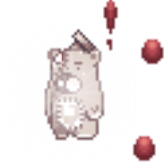 Shining Teddy Bear #20260 |
1,000 kills |
| Illusion of Twins | ant_d02_i |
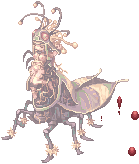 Silent Maya #21395 |
1,000 kills |
| Illusion of Underwater | iz_d04_i |
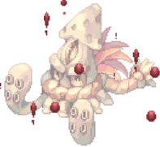 Deep Sea Kraken #20811 |
1,000 kills |
| Illusion of Underwater | iz_d05_i |
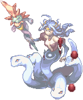 Deep Sea Witch #20843 |
1,000 kills |
| Illusion of Vampire | gef_d01_i |
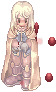 Bomi #3756, then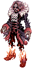 Dracula of Rage #3757 |
30 item hand-ins to Bomi |
The 2-hour rest. Most Illusion bosses rest for 2 hours after they die. The sections below say how kills made during the rest are handled, because it is not the same in every dungeon.
Illusion of Abyss: Ominous Turtle General¶
Map: Bleak Turtle Palace (tur_d04_i).
Kill 2,500 of each of these five monsters. That is 12,500 kills in total, and every type must reach 2,500. Extra kills of a type that is already at 2,500 don't help.
| Monster | Kills |
|---|---|
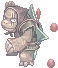 Ominous Assulter #3799 |
2,500 |
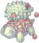 Ominous Permeter #3800 |
2,500 |
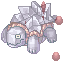 Ominous Freezer #3801 |
2,500 |
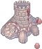 Ominous Solider #3802 |
2,500 |
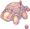 Ominous Heater #3803 |
2,500 |
The Ominous Turtle General #3804 appears where the last monster died. The map announces "Ominous Turtle General : Who interferes with my authority!!!"
Kills don't count while the General is alive or during the 2-hour rest after it dies. The count starts again from 0.
Illusion of Frozen: Awakened Ktullanux¶
Map: ice_d03_i. You need Base Level 120 to step through the portal at the bottom of the Ice Dungeon (ice_dun02).
Four Orbs of Seal stand around the middle of the cave:
/navi ice_d03_i 126/126/navi ice_d03_i 172/126/navi ice_d03_i 172/173/navi ice_d03_i 127/172
Click an orb and it glows for 30 seconds. When all four are glowing at the same time, the cave announces
"All the energy that was sealed inside the cave has been released, awakening Ktullanux." and the
Awakened Ktullanux #3796 appears at /navi ice_d03_i 149/112 a few seconds later.
It's easiest with four players, one per orb, but one fast player can run the square alone.
After a summon the orbs need 24 hours before they work again. The 24 hours start when the boss is summoned, not when it dies. Until then the orbs say "This orb needs more time to gather enough energy".
Illusion of Labyrinth: Chaos Baphomet¶
Map: prt_mz03_i.
Kill each of these four heroes once, in any order:
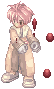
Chaotic Andrea #20521,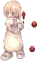
Chaotic Anes #20522,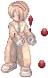
Chaotic Silvano #20523,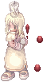
Chaotic Cecilia #20524There is only one of each on the map, and each comes back 1 hour after it dies. Killing the same hero twice does nothing. When the fourth one falls, the map announces "A terrible presence has descended from beyond the chaos of the deep abyss." and the Chaos Baphomet #20520 appears.
Kills don't count while Chaos Baphomet is alive or during its 2-hour rest.
Illusion of Luanda: Ancient Tao Gunka & Ancient Wootan Defender¶
Map: com_d02_i.
The dungeon switches between two sets of monsters. Kill 1,000 monsters of the set that is out now:
| Set | Monsters | Boss |
|---|---|---|
| Stone set (first after a restart) | 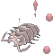 Ancient Tri Joint #20270,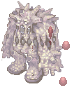 Ancient Stalactic Golem #20271,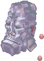 Ancient Megalith #20272 |
Ancient Tao Gunka #20273 |
| Wootan set | 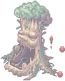 Ancient Stone Shooter #20274,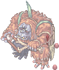 Ancient Wootan Shooter #20275,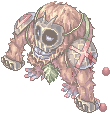 Ancient Wootan Fighter #20276 |
Ancient Wootan Defender #20277 |
The boss appears where the 1,000th monster died. When it dies, the whole dungeon swaps to the other set and the count starts again from 0. Kills made during the 2-hour rest still count, so if the next 1,000 are done before the rest is over, the boss appears on the first kill after it ends.
Illusion of Moonlight: Angry Moonlight Flower¶
Map: pay_d03_i.
Kill
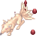
Angry Nine Tail #3759. After 1,000 of them, every further kill has a 10% chance to summon the Angry Moonlight Flower #3758. The map announces "Angry Moonlight Flower: Who dares bully us again? They're in a lot of trouble!"There is no rest here. Kills don't count while she is alive, and the count starts again from 0 when she dies.
Illusion of Moonlight: Wizard of the Truth¶
Map: pay_d03_i.
Kill 10
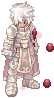
Deranged Adventurer #3765. There are only 5 on the map, and each comes back 15 seconds after it dies. The 10th kill summons the Wizard of the Truth #3764 somewhere on the map. Kills don't count while it is alive.Illusion of Teddy Bear: Shining Teddy Bear¶
Map: ein_d02_i.
Kill 1,000 of these monsters (any mix):
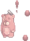
Red Teddy Bear #20255,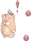
Yellow Teddy Bear #20256,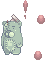
Green Teddy Bear #20257,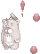
White Teddy Bear #20258,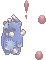
Blue Teddy Bear #20259The Shining Teddy Bear #20260 then appears somewhere on the map without an announcement.
The count starts again from 0 when the boss appears. Kills made while it is alive and during the 2-hour rest still count, so if the next 1,000 are done early, the boss appears on the first kill after the rest ends.
Illusion of Twins: Silent Maya¶
Map: ant_d02_i.
Kill 1,000 of these monsters (any mix):
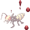
Diligent Andre #21386,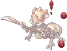
Diligent Soldier Andre #21387,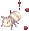
Diligent Andre Larva #21388,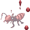
Diligent Deniro #21389,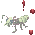
Diligent Piere #21390,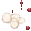
Mushy Ant Egg #21391,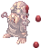
Gutsy Giearth #21392,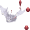
Gutsy Familiar #21393,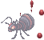
Diligent Vitata #21394The map announces "An inaudible noise approaches..." and the Silent Maya #21395 appears somewhere on the map. The count works like in the Teddy Bear dungeon: it starts from 0 when the boss appears, and kills made while it is alive or resting still count.
Illusion of Underwater: Deep Sea Kraken & Deep Sea Witch¶
Each floor has its own boss and its own count of 1,000 kills (any mix). The count works like in the Teddy Bear dungeon: it starts from 0 when the boss appears, and kills made while it is alive or resting still count.
| Floor | Monsters | Boss |
|---|---|---|
Deep Sea Cave 1 (iz_d04_i) |
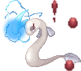 Deep Sea Sropho #20801,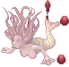 Deep Sea Obeaune #20802,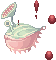 Deep Sea Deviace #20803,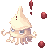 Deep Sea Marse #20804,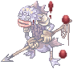 Deep Sea Merman #20805 |
Deep Sea Kraken #20811 |
Deep Sea Cave 2 (iz_d05_i) |
Deep Sea Sedora #20806, 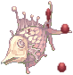 Deep Sea Swordfish #20807, Deep Sea Strouf #20808, Deep Sea Phen #20809, Deep Sea King Dramoh #20810 |
Deep Sea Witch #20843 |
The floor announces "Attention! Deep Sea Kraken Has Awake!!" or "Attention! Deep Sea Witch Has Awake!!".
Illusion of Vampire: Berserk Bomi & Dracula of Rage¶
Map: gef_d01_i.
This one is driven by a daily quest instead of kills.
- Finish the Illusion of Vampire story, up to and including the quest Warden's Role.
- Talk to Bomi (
/navi gef_d01_i 81/135, her NPC is named Wizard) for the daily quest Unreliable Fake Blood: hunt 5 Matte Drainliars and 5 Neon Mushrooms, then bring her 10 Sticky Blood #25268 and 10 Mushroom Sap #25269. Each hand-in gives 500,000 Base and Job EXP and an Illusion Stone #25271. You can do it once a day; it resets at 04:00. - Bomi counts every player's hand-ins. On the 30th, the toxins take over and she turns into Bomi #3756. Hand-ins made while Bomi or Dracula is out don't count.
- When Berserk Bomi dies, the Dracula of Rage #3757 appears somewhere on the map to avenge her.
When Dracula dies, Bomi wakes up and the count starts again for the next 30 hand-ins.
Other summoned bosses¶
Thanatos Phantom (Thanatos Tower)¶
The classic Thanatos summon works the same way as on official servers. You need these items:
- One of each Charm Stone: Yellow Charm Stone #7427, Green Charm Stone #7429, Blue Charm Stone #7428, Red Charm Stone #7426, Black Charm Stone #7430
- One of each Fragment: Fragment of Misery #7437, Fragment of Agony #7436, Fragment of Hatred #7438, Fragment of Despair #7439
Step 1: open the gate on Thanatos Tower 12F (tha_t12). Put the Charm Stones into the five statues
in this order. Each one only takes its stone after the one before it.
| # | Statue | Stone | Where |
|---|---|---|---|
| 1 | Gold Religious Statue | Yellow | /navi tha_t12 161/57 |
| 2 | Green Wiseman Statue | Green | /navi tha_t12 154/17 |
| 3 | Blue Angel Statue | Blue | /navi tha_t12 103/17 |
| 4 | Bloody Knight Statue | Red | /navi tha_t12 94/57 |
| 5 | Dark Devil Statue | Black | /navi tha_t12 129/86 |
After the black stone, a portal opens in the middle of the floor (/navi tha_t12 130/52) to the boss room.
Step 2: release the four memories. In the boss room four Memory Seals wait in the corners. Walk onto a seal,
then type the fragment's name exactly (for example Fragment of Misery). The fragment is used up and a
Thanatos memory appears:
| Seal | Type | Boss |
|---|---|---|
/navi thana_boss 217/167 |
Fragment of Misery | Maero of Thanatos #1711 |
/navi thana_boss 202/75 |
Fragment of Agony | Dolor of Thanatos #1712 |
/navi thana_boss 80/76 |
Fragment of Hatred | Odium of Thanatos #1709 |
/navi thana_boss 62/171 |
Fragment of Despair | Despero of Thanatos #1710 |
Step 3: Thanatos. When all four memories are dead, everyone in the room is moved to the top of the map.
Step onto the seal you land on (/navi thana_boss 141/228) and the Thanatos Phantom #1708 appears after about 16 seconds.
When Thanatos dies, everyone in the room is sent back to 12F about 36 seconds later. The statues and seals reset 2 hours after his death. Until then nobody can start a new summon.
Ktullanux (Ice Dungeon 4F)¶
Map: ice_dun03. This is the normal Ktullanux, not the Illusion one.
- Get far enough in Rachel's Ice Necklace quest (it starts with Sincere Follower Urstia,
/navi rachel 157/183): after Hamion's part, you must have taken the necklace back to Maheo, the man stuck in the ice inice_dun02. Before that the fires won't react to you. - Four Blazing Fires burn at
/navi ice_dun03 126/126,172/126,172/172and127/172. Put each one out with a Freezing Snow Powder #7574 or an Ice Scale #7562 (one item per fire). - When the fourth fire goes out, Ktullanux speaks for about 20 seconds and the Ktullanux #1779 appears at
/navi ice_dun03 150/135.
Any player at the right quest step can put out a fire, so a group can split the four fires. The fires come back 2 hours after Ktullanux dies.
Satan Morocc (Resurrection of Satan Morocc quest)¶
Map: moc_fild21. This boss is part of the Resurrection of Satan Morocc quest.
- Someone has to walk past
/navi moc_fild21 38/193. Satan Morocc starts taunting the map. - A player who has brought Chief Balrog the 50 Glacial Heart #7561 (or who has already finished the quest) touches
the Group of Evil at
/navi moc_fild21 178/239. - The
 Satan Morocc #1916 appears at
Satan Morocc #1916 appears at /navi moc_fild21 177/217.
If nobody kills him within 90 minutes, he leaves and can be summoned again right away. After he dies, a Time-Space Gap opens for the quest, and he can't be summoned again for about 6 hours.
See also¶
- Tomb of the Fallen: kill the fallen heroes in the Nightmare Bio Lab to wake a random MVP.
- Abyssal Bloody Branch: an item that summons a random field or Illusion MVP.
- World Boss and Hell Raid: scheduled boss events.